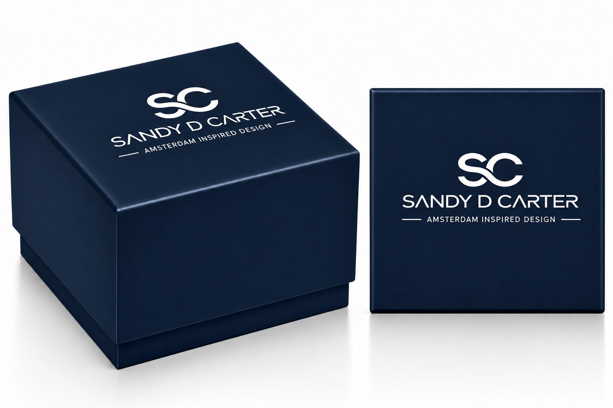

Rajan Mehta
International watch-industry experience, entrepreneurial direction and the bridge from creative idea to commercial brand.
The SANDY D. CARTER story
Between 2009 and 2013, Rajan Mehta’s years in the Netherlands became the setting for a watch-brand idea shaped by international experience, European design and three complementary perspectives.
The story begins with a founder, a formative European chapter and an ambition to create an independent watch brand.
From 2009 to 2013, Rajan Mehta lived and worked in the Netherlands. His professional experience in the watch category included Danish Design and Jacob Jensen, strengthening his appreciation for minimalist thinking, proportion, functionality and refined product presentation.
Danish Design carries a Scandinavian-inspired identity; Jacob Jensen has Danish design heritage. These references describe Rajan’s professional exposure and do not imply endorsement of SANDY D. CARTER.
A larger ambition began to take shape: a watch brand with a distinctive European identity, built around simplicity with character rather than unnecessary complexity.
In Amsterdam, Rajan connected with Sandy, a Dutch illustrator and creative professional, and Carter, a senior male designer described by Rajan as experienced in European watch design.
International watch-industry experience, entrepreneurial direction and the bridge from creative idea to commercial brand.
Individuality, expressive visual thinking, contemporary aesthetics and design that communicates.
Proportion, product aesthetics, materials, finishing and the balance between appearance and function.
Rajan is the founder. Sandy and Carter are described as original creative collaborators, not legal co-founders.
Sandy’s publicly documented professional background identifies her as a Dutch illustrator based in Amsterdam. She completed a BA in Illustration at Willem de Kooning Academy in 2013 and established her independent studio in 2015. Her practice spans illustration, campaigns, packaging, retail environments, murals and brand identity, with a visual language known for curved lines, confident composition, colour and storytelling.
Her published portfolio includes work for UNIQLO, Nike, Spotify, IKEA, Google Home and Benefit Cosmetics. Those names are portfolio context only; none is presented as endorsing SANDY D. CARTER.
Carter is described by the founder as a senior designer, based in the Netherlands during the formative period, whose contribution included watch proportions, product aesthetics, materials, finishing and timeless rather than trend-driven thinking.
Carter’s full name, education, employers, qualifications and portfolio remain pending documentary verification. No unsupported details are supplied.
Some ideas are born in studios. Others take shape through conversations, creative perspectives and a shared ambition. According to Rajan Mehta’s firsthand account, the original conversations involving Rajan, Sandy and Carter took place at Droog Amsterdam, Staalstraat 7B.
The place became part of the brand’s origin story, and the letter D was chosen as a tribute to where the idea took shape.
Following the original creative development in Amsterdam, a SANDY D. CARTER trademark application was filed in India on 17 December 2014 in Class 14, identifying Rajan Mehta as the applicant.
House Of Brands Fashion LLP was established in India in 2015. Founded by Rajan, the business provides experience across e-commerce, product sourcing and development, brand building, retail and marketplace distribution.
Myntra is described as a marketplace partner of House Of Brands. It is not presented as owner, founder or exclusive distributor of SANDY D. CARTER.
SANDY D. CARTER is preparing for its renewed India launch in December 2026. The Netherlands remains its creative birthplace and a future market ambition.
The wider plan looks towards the United Arab Emirates, the United Kingdom—particularly London—and the United States, including a future Los Angeles office presence. These are future intentions, not claims of current operations or confirmed retail locations.
The setting of the original idea and a future European market.
Next major chapter · December 2026.
Part of the international ambition.
An intended United Kingdom market.
A planned office ambition; not currently operational.
An identity in every detail
The midnight-navy presentation box carries the same understated Amsterdam-inspired identity as the brand itself: the original SC monogram, the SANDY D. CARTER wordmark and a disciplined white-on-navy composition.
The packaging is a contemporary expression of the brand—not presented as archival evidence of the founding meetings.

TIME. REFINED.
Meet the people behind the Amsterdam-born vision, or explore the first collection direction ahead of the planned India launch.
Meet our people Explore the collection